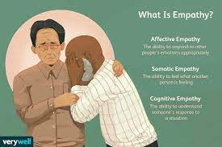

Shrinking
I recently started watching this series on Apple TV. It is about a therapist, who starts to tell his patients
exactly what's on his mind. He does this out frustration after his wife passed away the year prior in a car accident.
Instead of dealing with his grief, he tries to surpress it in unhealthy ways. After being confronted by his next door neighbor and friend, he decides to focus his attention on his patients
and rebuilding his relationship with his daughter.
